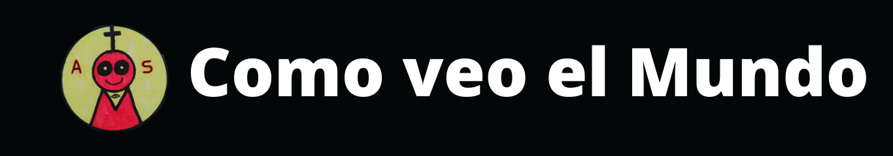

Menu

"Como veo el mundo por "Tomas Collado Long""
Es esto lo que debe comenzar con una pregunta y dice así, ¿de qué manera veo él mundo y la vida? Primero que nada la vida es muy abstracta y esto surreal. Nosotros estamos sin saber donde y cuando como acruar. la realidad real es desconocida y distinta para los billones de habitantes. en este planeta del universo llamado tierra y todas las personas vivientes viven distintas realidades y en sus mentes podemos encontrar pensamientos unicos e imaginacion personal siendo invisibles sin ser fisicas. realidades hay muchas y tambien muchas desconocidas por las distintas culturas en este gigantesco mundo. nuestra forma de ver la vida es ilusa y abstracta ya que somos billones de mentes con vida, quiero decir que para todos es diferente lo que vemos, cómo lo vemos, cómo lo usamos y cómo lo sentimos, etc. Lo que es un hecho real es que para todos el tiempo es algo relativo ya que a veces se nos corre mas rapido y otras mas lento segun lo que estes haciendo pero a todos nos corre hacia atras desde el momento del nacimiento. tambien Algo casi imposible es conocer a todo el mundo porque todos los dias muere alguien, Quiero agregar como ejemplo la diferencia de colores en un cuadro colorido sea cual sea, la mayoría lo percibe distinto y además la cantidad de estilos diferentes que se pueden formar son casi infinitas segun el tamaño de la hoja. me dispongo a decir que todo es perfectamente aleatorio porque absolutamente todo es como debe ser. sea bueno o malo, es lo que es. realmente yo creo que todo es casi perfecto por la personal elección de cada uno, para cada uno. pregúntate ahora a ti mismo por lo que acabo de decir: ¿Por qué estás leyéndome justo a mí y justo esto? ¿Qué te está tratando de hacerte ver tu realidad? Algo esta pasando. Yo digo que hay infinitas de posibilidades y justo la que tú elijas será perfecta para ti totalmente coherente porque eres otro ser viviente con una mente distinta pero real. espero creer yo que eso es asi,
Y ahora yo pensándolo bien, tengo infinitas cosas por elegir y hablar por ejemplo; la educación o los colores, me atrevo a agregar que todo se puede hablar de dos o mas cosas juntas, ¿música o sentimientos? ¿magia o ilusiones ópticas?, Llamémoslo magia para entretener o vender, Etcétera... Ahora quiero agregar algo personal o capaz no tanto... Bueno yo quiero agregar esto: Si estás acostumbrado a las mismas poses físicas de los demas al transmitir algo repetidamente, con la misma pocicion fisica puedes comunicar el mismo mensaje y si otro esta al tanto de la misma postura como por ejemplo que el o ella te guiñen un ojo ese gesto representa lo que estas pensando .Tambien existen de forma inconciente,Por ejemplo que le estés hablando de su comida favorita o hasta pensarlo.. el otro ser humano sacara la lengua o se mojara los labios. significa que lo saborea o significa qué hay comida, debo aclarar que las toses son los gestos mas comunes y normales concientes e inconcientes entre casi todos los seres humanos. no sé si lo hayan notado pero así es hasta inconscientemente por estudios que he hecho.
Y ya cambiando un poco el tema sí el mundo estuviera todo al revés, que también he puesto eso a prueba les quiero comentar que reírse es estar llorando. esta forma de ver el mundo es mas facil de entender pero dificil de encontrar.
Otra realidad que llama mi atención es el mundo del "no", funciona de esta forma: No leas el no ni lo escuches porque es una completa negacion. Entonces yo ahora te digo con esto sobre el no, atentos a lo que sigue, que es esto: "que no. es perfecto. ¿que trate de decir ahi? Respuesta: que es perfecto.
No todo toma mucho sentido, pero indudablemente lo es, ¿no es cierto? y si... Pues él "no," es un hecho en este mundo. El sí vendría ser una posibilidad, te pongo un ejemplo, "si yo pudiera volar, pues volaría, ¿Qué más quieren que diga? ¿a qué país?, pues Alaska" ahora quiero agregar cambiando del todo el tema que lo más mágico objetivamente es la ciencia con sus experimentos con todo de nuestra realidad,, pueden cambiar de color (la sustancia o el objeto) estado y de olor entre otras y muchas cosas más como gases.
Vivimos dentro del tiempo que para mí viene a ser totalmente relativo según cómo te sientas. Y con esto ya estoy terminando, si quieren preguntar algo sobre la respiración les respondo lo que pienso de la ciencia, magia humana, objetiva.